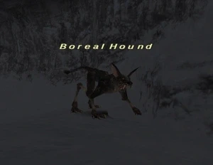

Level 75 reference · Zenith rules
|
Job: Dark Knight Notorious Monster |
 |

|
Zone |
Level |
Drops |
Steal |
Spawns |
Notes |
|
58 |
1 |
A, T(H), HP | |||
|
HP = Detects Low HP; M = Detects Magic; Sc = Follows by Scent; T(S) = True-sight; T(H) = True-hearing JA = Detects job abilities; WS = Detects weaponskills; Z(D) = Asleep in Daytime; Z(N) = Asleep at Nighttime | |||||

Notes:
- Spawns at (G-10). Guards the Triangular Frigicite needed for Atop the Highest Mountains quest.
- Respawns ~15 seconds after being killed.
- To get the Triangular Frigicite, click on the ??? which spawns after Boreal Hound dies.
- Uses Draw In, has increased attack speed and movement speed.
- Casts Blizzaga II, Freeze, and Ice Spikes.
- Casts Doom after 30 minutes.
- Uses Blood Weapon.
- Has ~30000 HP, incredibly low Defense and Vitality, and a +50% damage taken trait.
Adapted from Eden Wiki: Boreal Hound · Contributors and history · CC BY-SA 4.0. Revision 46758. Layout, links and optional background text adapted for Zenith.